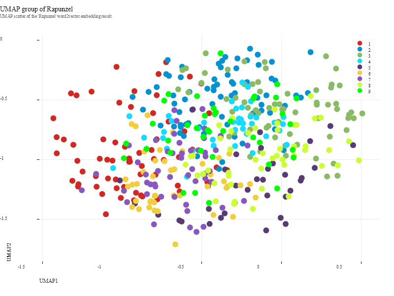

sciBASIC#
↖
sciBASIC#
↖
06 Tutorial — Word embeddings
Train CBOW word vectors on the tale of Rapunzel, then unfold the embedding with UMAP and k-means.
One fairy tale, one model, one picture of a vocabulary. The Grimm text of Rapunzel is segmented into sentences and fed to a continuous bag-of-words trainer (30 dimensions, min term frequency 1, single thread). The resulting 461 word vectors are projected onto a 9-dimensional UMAP manifold, partitioned into nine k-means clusters, and drawn as a Nature-themed scatter of UMAP1 vs UMAP2 — with the full coordinates exported to CSV.
02 Pipeline
From fairy tale to 9-D embedding
Segment
Paragraph.Segmentation splits the Rapunzel text into paragraphs of sentences, and every
sentence stream is handed to wv.readTokens.
Train
BuildWord2VecFactory configures a continuous bag-of-words model —
setVectorSize(30), TrainMethod.CBow, setFreqThresold(1), a single
thread — and wv.training() runs the pass over the tokens.
Embed
The 461 word vectors are pushed through umap(dimensions:=9, numberOfNeighbors:=64):
InitializeFit + Step(n_epochs) produce the 9-D manifold.
Cluster
Kmeans(k:=9) partitions the embedding; ClassId recovers cluster colors and
the first two UMAP dimensions become the plot coordinates.
Export
A Nature-themed scatter saves the 300-dpi PNG, and the full 461 × 11 table is written to CSV
with WriteCsv.
01 The Script
Full demo source
The complete script exactly as executed by the sciBASIC# script engine (vbs.exe) — nothing elided.
#include "Microsoft.VisualBasic.Data.NLP.Word2Vec.dll"
#include "Microsoft.VisualBasic.Data.NLP.dll"
#include "Microsoft.VisualBasic.DataMining.Framework.dll"
#include "Microsoft.VisualBasic.Drawing.dll"
#include "Microsoft.VisualBasic.Data.DataPlot.dll"
#include "Microsoft.VisualBasic.Data.Framework.dll"
#include "Microsoft.VisualBasic.Math.Randomizer.dll"
#include "Microsoft.VisualBasic.DataMining.UMAP.dll"
Imports Microsoft.VisualBasic.Data.NLP.Word2Vec
Imports Microsoft.VisualBasic.Data.NLP.Model
Imports Microsoft.VisualBasic.DataMining
Imports Microsoft.VisualBasic.DataMining.Kmeans
imports microsoft.visualbasic.data.plots
imports microsoft.visualbasic.drawing
Imports Microsoft.VisualBasic.Data.Framework
imports Microsoft.VisualBasic.linq
imports Microsoft.VisualBasic.scripting.runtime
imports Microsoft.VisualBasic.DataMining.UMAP
dim textfile = "G:\GCModeller\src\runtime\sciBASIC#\Data\TextRank\Rapunzel.txt"
dim wv As Word2Vec = BuildWord2VecFactory() _
.setVectorSize(30) _
.setMethod(TrainMethod.CBow) _
.setNumOfThread(1) _
.setFreqThresold(1) _
.build()
Dim data As Paragraph() = Paragraph.Segmentation(textFile.ReadAllText).ToArray
For Each p As Paragraph In data
For Each line In p.sentences
Call wv.readTokens(line)
Next
Next
call wv.training()
dim vector = wv.outputVector()
dim umap as new umap(dimensions := 9,numberOfNeighbors := 64 )
dim n_epochs = umap.InitializeFit( vector.AsEnumerable().asdataset().toarray())
Call umap.Step(n_epochs)
dim clusters = umap.AsDataSet(labels:=vector.tokens).Kmeans(k:=9).toarray()
dim class_id = clusters.ClassId().ascharacter().toarray()
dim x = clusters.feature(offset:= 0).toarray()
dim y = clusters.feature(offset:= 1).toarray()
dim result = clusters.as_dataframe(colnames:= fieldname("v", n:=vector.words).toarray())
' scatter plot with UMAP1 and UMAP2
call SkiaDriver.Register()
call result.add("class_id", class_id)
Using plt As New ScatterPlot(800, 600, PlotTheme.Nature())
plt.Title = "UMAP group of Rapunzel"
plt.SubTitle = "UMAP scatter of the 'Rapunzel' word2vector embedding result"
plt.XLabel = "UMAP1"
plt.YLabel = "UMAP2"
plt.Plot(DataSerials(x,y, class_id).tolist())
plt.SavePng("Z:/rapunzel-umap-groups.png", 300)
End Using
call result.WriteCsv("Z:/rapunzel-umap-groups.csv")04 Results
The word-vector manifold

and, had, long,
to…) holds the left side, content-word neighborhoods weave through the middle, and
recurring word families settle along the lower arc.{kind=link}
05 Table preview
rapunzel-umap-groups.csv
461 vocabulary words × 9 UMAP dimensions + cluster label. The first and last rows of the exported table:
| word | v_1 | v_2 | v_3 | v_4 | v_5 | v_6 | v_7 | v_8 | v_9 | class_id |
|---|---|---|---|---|---|---|---|---|---|---|
| and | -0.5998655980554012 | -0.7759891973831121 | 1.169754736638962 | -0.772826528168772 | 0.7156521329741893 | 0.21025708784631048 | -0.611478033873635 | -1.4529130586962897 | 0.3460370792220926 | 1 |
| had | -0.6991938607880789 | -0.6946228648911119 | 0.12972037787514187 | -0.6739333878511627 | 0.7210258637655798 | -0.130498710045367 | -1.30958227299042 | -0.414836311624001 | 0.50196988847065 | 1 |
| long | -0.8830050282036487 | -0.9566397822888046 | 0.1104851020968539 | -0.4471946624193759 | 1.3011784779612763 | 0.3743987948595769 | -0.8793907408675563 | -0.6158811554002226 | -0.18843255385161553 | 1 |
| to | -0.7735194063258328 | -0.4736198714648846 | 0.34514072471393054 | -0.8714137827541731 | 0.8450754845906695 | -0.45378461908639844 | -1.085546106222893 | -0.5440820510909418 | 0.4541082982143653 | 1 |
| ··· | ||||||||||
| nest; | -0.4813153824031893 | -0.8224873628673908 | 0.8832741767756902 | -0.09913554216479063 | 0.5570322656907201 | -0.45318786940140854 | -1.5940159646468028 | -0.8178373571692098 | -0.7555197607380995 | 9 |
| wandered | 0.080040897563951 | -0.9305804087880384 | 0.9510701701903588 | -0.09050471042964342 | 1.097090294060036 | -0.8739597344586885 | -0.9871220546903179 | -0.9857527131149838 | -0.2062685269017953 | 9 |
| roamed | 0.1035974551130789 | -0.5009635799001223 | 1.1052984262506593 | 0.08165889310921583 | 1.031730058988748 | -0.6561032321795301 | -0.7917918859477219 | -1.1913404757919983 | -0.06989926120091404 | 9 |
Cluster sizes
| Cluster | Words | First members |
|---|---|---|
| Cluster 1 | 65 | and, had, long, to, house, splendid’… |
| Cluster 2 | 72 | once, who, wished, for, child, of’… |
| Cluster 3 | 67 | There, man, These, be, however, dared’… |
| Cluster 4 | 41 | woman, vain, that, grant, full, herbs’… |
| Cluster 5 | 34 | were, length, the, her, back, garden’… |
| Cluster 6 | 44 | was, desire, flowers, no, one, great’… |
| Cluster 7 | 51 | in, It, high, into, power, standing’… |
| Cluster 8 | 48 | a, At, hoped, about, people, seen’… |
| Cluster 9 | 39 | God, little, window, at, which, by’… |